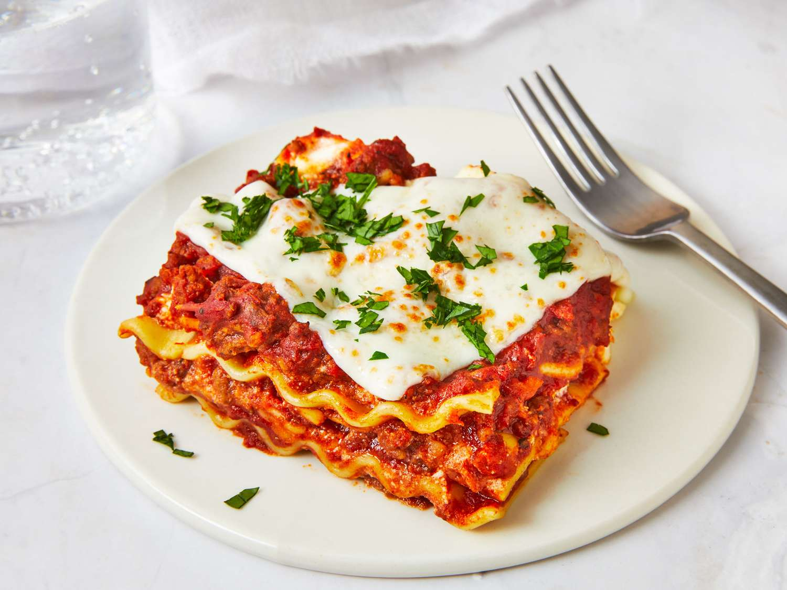

Lasagna

The finished result
Lasagna is a typical italian dish.
Originally created as peasant food it was cheap and easy to make.
The Ingredients really fill you up and are beautiful
This recipes is on eof the easiest.
It's also one of the most filling.
Below instructions will serve 4 people.
Ingredients
- 500ml lukewarm water
- 750g All purpose flour
- 800g canned tomatoes
- 300g minced meat
- Various spices
- 100g grated cheese
- 100ml milk
- 100g Flour
Steps
- Make Bechamel from Flour and milk
- Make pasta sheets from water, flour and salt
- Put the minced meat in a pan on medium heat until only 10% pink
- Layer lasagna
- Put in 180°C oven for 25min